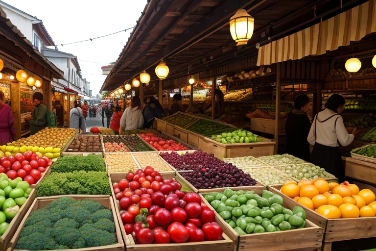
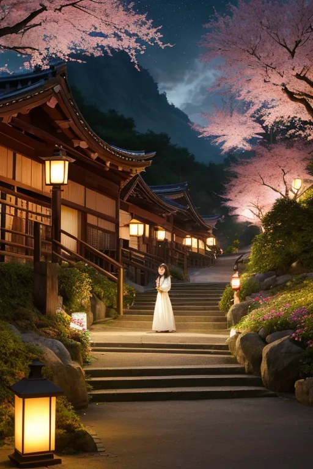
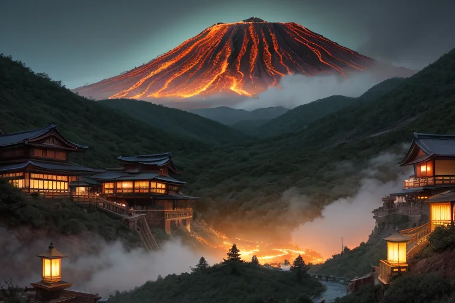
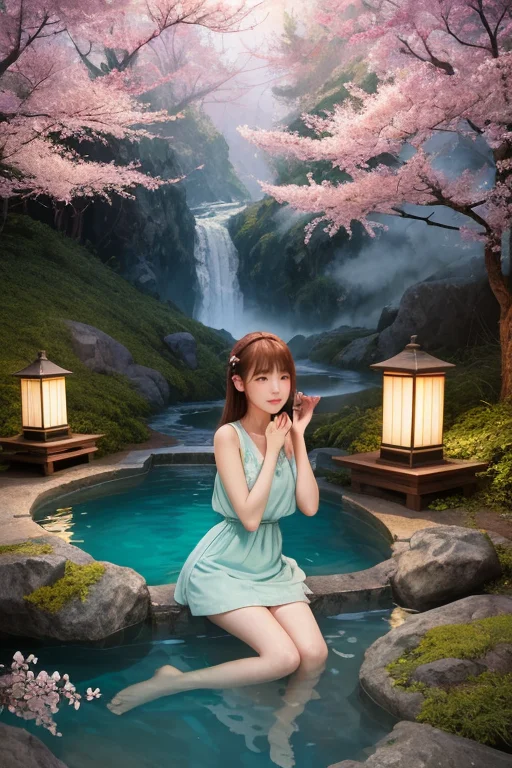
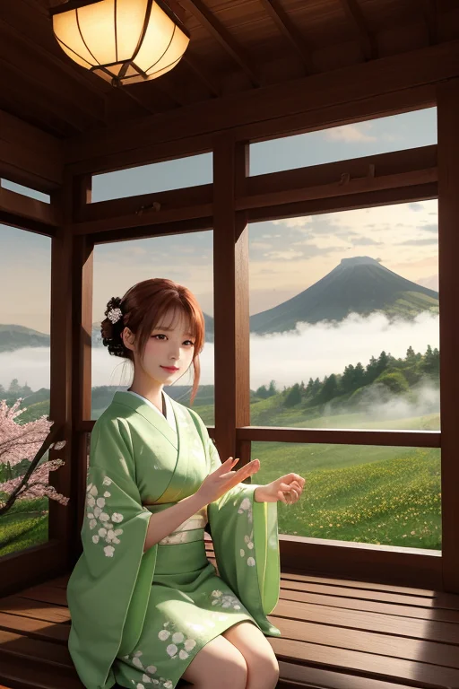

第一章 現実の山形
あなたはまだ気づいていない。この土地にも、王がいることを。
山形市の中心市街地、十日町の市場は朝から活気に満ちていた。さくらんぼの朱、新たまねぎの白、枝豆の緑。色とりどりの実りが所狭しと並び、店主たちの威勢のいい声が飛び交う。金の流れは人の体温のようにこの場を温め、欲望と生活の匂いが混ざり合う。ここは商都線、果実と野菜が富を生み、人々の暮らしを支える場所だ。
その喧噪のただ中、市場の片隅の古びた木箱の上に、一人の青年が腰を下ろしていた。ヤマガリア・フルクト。彼の目は、取引される果実の一つ一つ、そしてそれを懸命に売る人々の手元を追っている。彼の王国「ヤマガリア・フルクト」のテーマは実りと忍耐。彼はここで、取引の熱狂が生む小さな「歪み」――焦りから生まれる不用意な言葉、競争心が煽る小さな諍いの種――を、そっと調整していた。大きな災害ではない。日常の、ごく小さな軋みだ。
「王様、今日もたくさんの実りがありますね」
傍らに佇む小さな光の粒、主席妖精フルッタが穏やかに囁いた。彼女の声は、市場の喧騒を優しく濾過する。
「……うん」
王は僅かに頷いた。彼の心には、いつも一つの問いがよぎる。この調整は、ただの「待ち」ではないか。変化を起こさず、ただ均衡を保つこの行為は――。
活気ある市場のざわめきが、彼の静かな疑問を飲み込んでいく。

第二章 歪みの兆候
山寺の石段を、観光客の列がゆっくりと昇っていた。その足元、見えない地層の深部で、ごく微細な「ずれ」が生じていた。それは経済の流れにも似て、人の欲望や焦りが蓄積するように、岩盤にも圧力がたまっていく。
蔵王温泉街の活気は、少しだけ熱を帯びていた。客足は増え、湯治客の笑い声が響く。しかし、その裏で、地元の旅館主たちの間に、見えない焦燥が広がっていた。次の繁忙期までに改装を、と借り入れを重ねる者。隣町の成功に遅れをとるまいと、無理な拡張を計画する者。金の流れが速すぎて、土地の呼吸が乱れ始めていた。
最上川の水音を背に、王は市場の片隅に立つ。彼の目には、人々の足取りの僅かな乱れ、会話の間にある小さな苛立ちが、地層の歪みと重なって見える。彼ができることは、この熱を一気に冷ますことではなく、ほんの少し、その膨張を遅らせることだけだ。
「王様」フルッタがそっと肩に触れる。「待つことは、醸成です。急ぐことは、時に実を腐らせます」
王は黙って、掌に力を込めた。微調整の光が、市場のざわめきの中に、静かに散っていく。

第三章 王の葛藤
蔵王温泉の硫黄の匂いが、欲望の熱気と重なる。観光客の笑顔の裏に、もっと、もっと、という渇望が蠢く。歪みは、この熱狂そのものから生まれていた。人々が求める「すぐに、たくさん」という願いが、地脈を焦がす。
ヤマガリア・フルクトは、温泉街の喧騒を見下ろす丘の上に立つ。彼の手から放たれる微調整の光は、人々の足をほんの一瞬遅らせ、買い急ぐ手を少しだけ躊躇わせる。それは需要の急激な膨張を緩和する、ささやかな抵抗だ。
「待つことは、敗北か」
彼は己に問う。市場の熱は、彼が抑えようとするほどに強まるように感じられた。結果を出せない守護者とは何なのか。過程を重視する彼の在り方は、この熱気に溢れた世界線では、無力に見える。
フルッタが、そっと彼の腕に寄り添う。「王様、芭蕉も最上川を『早み』とは詠みましたが、その流れを止めはしませんでした。早さの中に在るものを見つめることも、守りです」
王は目を閉じた。掌で感じる地脈の軋みは、人々の心の軋みと同調していた。彼にできるのは、流れを変えることではなく、その岸辺として、少しだけ崩壊を遅らせることだけなのだ。

第四章 妖精との対話
蔵王温泉の硫黄の香りが立ち込める露天風呂で、フルッタは湯気の向こうに佇む王に語りかけた。
「ここで商うのは、湯治の時間そのものです。痛みを和らげ、明日への活力を蓄える時間を。王様が調整される『遅延』も、同じでは？」
彼女の手から、湯の中にさくらんぼの種が一粒落ちた。ゆっくりと底へ沈んでいく。
「商人たちは、この種がいつ芽吹き、いつ実るか、気が気ではありません。でも、芽吹かぬ季節に無理に掘り起こせば、種は腐るだけ。待つことは、敗北ではなくて……」
サクランが花笠を揺らしながら続けた。
「ここでは、『待ち』が駒の名前です。前に出られないからこそ、盤面全体が見える。出羽三山の修験者だって、山に籠もる『待ち』の時間で、己と世を見つめ直す」
王は黙って湯に浸かった。掌で感じる地脈の熱は、人々の欲望の熱そのものだった。彼は流れを止められない。だが、この熱が暴走し、自らを焼き尽くす寸前で、ほんの一瞬、風を送ることはできる。それは、敗北ではなく、この土地が選んだ、もう一つの「実り」の形なのかもしれない。

第五章 微調整と余韻
蔵王温泉の露天風呂から立ち上る湯気は、夜明け前の冷気に溶け、山肌を這う雲となった。王は宿の縁側に立ち、目を閉じる。彼の感覚は、山形を走る高速道路の車の流れ、始発を待つ駅のホーム、果物市場で荷下ろしを始めるトラックのエンジン音と重なる。人々の「動きたい」という欲望の波。その波が、地脈の「歪み」という岩礁にぶつかり、渦を巻く地点が幾つもある。
彼は指先を微かに動かした。信号機の故障を予期し、三秒早く点滅を変える。峠道でスリップしそうな軽トラの前に、昨夜落ちた枝が転がるのを、ほんの少し横にずらす。それは誰にも気付かれない。事故が「起きなかった」ことなど、記録に残らないからだ。
フルッタがそっと肩に寄り添う。「あなたの『待ち』が、今日も多くの実りを守りました」。王は首を振った。「守ったのではない。彼ら自身が選ぶ『道』の、ほんのわずかな雑音を消しただけだ」。彼が調整するのは災害ではなく、人々の選択が歪みに翻弄されないための、僅かな余白に過ぎない。
待つことは敗北か。彼は今、確信を持って言える。待つことは、盤面を見据え、次の一手を支える「駒」そのものだと。流れを無理に変えず、その熱が自らを傷つけないよう、そっと風を送る。それが、この実りと忍耐の王国の、静かな誇りだ。
あなたの町にも、王がいる。